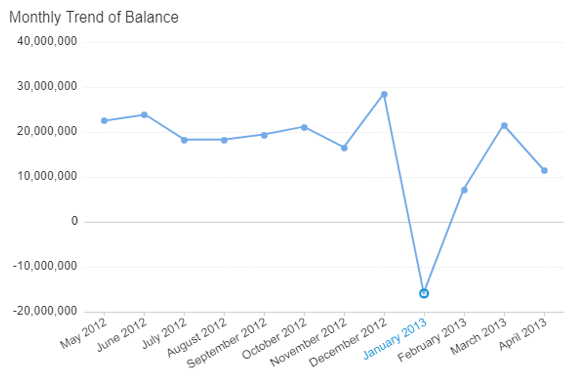
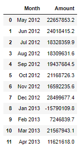
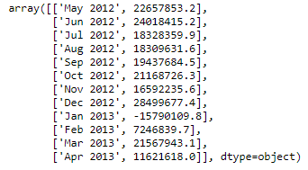
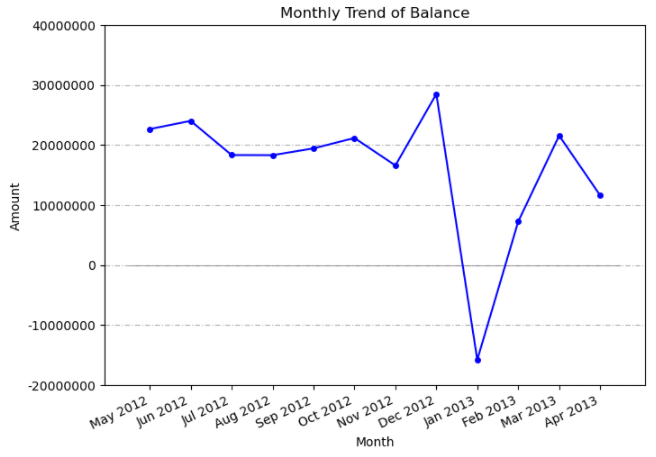

Using Matplotlib
Recreating Monthly Trend of Balance in Matplotlib. The original graph was done in Web Intelligence.
Here I will recreate the following:

Importing Libraries
We need to import matplotlib.pyplot, numpy and pandas.
# Import Matplotlib and allow plots to show in the Jupyter Notebook
import matplotlib.pyplot as plt
%matplotlib inline
# need this to plot at multiples of 10000000 on y-axis
from matplotlib.ticker import (MultipleLocator, AutoMinorLocator)
# Import NumPy and Pandas
import numpy as np
import pandas as pd
# Auto reloads notebook when changes are made
%reload_ext autoreload
%autoreload 2
Import data into a data frame
mtob_df = pd.read_csv(r'E:\project\matplotlib_project\monthly_trend_of_balance.csv')
mtob_df

Converting to Numpy array
# Convert from Pandas to NumPy array
np_arr = mtob_df.to_numpy()
np_arr

Get ready x and y
x_1 = np_arr[:,0]
y_1 = np_arr[:,1]
Plot the graph
# Define width & height in inches
# Dots per inch
#
fig_1 = plt.figure(figsize=(6,4),dpi=100)
# Adds axes with a left, bottom, width and height that ranges from 0 to 1
# which is the percent of the canvas you want to use
#
axes_1 = fig_1.add_axes([0,0,1,1])
# Set labels and title
axes_1.set_xlabel('Month')
axes_1.set_ylabel('Amount')
axes_1.set_title('Monthly Trend of Balance')
# plot lines in blue
# select marker to match source
#
axes_1.plot(x_1,y_1, color = 'blue', marker='o', markersize = 4)
# Add a grid, dashes(5pts 1 pt dashes separated by 2pt space)
#
axes_1.grid(True, axis = 'y', dashes=(5, 2, 1, 2))
# Plot horizontal lines at each y from xmin to xmax.
# xmin = -0.5
# xmax = len(x_1)-0.5
axes_1.hlines(0,-0.5,len(x_1)-0.5, color = 'grey', lw=0.5)
# major ticks at multiples of 10000000
# Label major ticks with '.0f' formatting>
#
axes_1.yaxis.set_major_locator(MultipleLocator(10000000))
axes_1.yaxis.set_major_formatter('{x:.0f}')
# set the ylimits to match source
#
axes_1.set_ylim([-20000000, 40000000])
# `ha` is just shorthand for horizontalalignment
# xlabel looks better with ha set this way.
plt.xticks(rotation = 25, ha='right')
Graph Output

Saving the graph
# save as png
#
fig_1.savefig(r'E:\project\matplotlib_project\saved_png\monthly_trend_of_balance.png')
Comments
Notice the vertical axis is marked at multiples of 10,000,000 just like in Web Intelligence. The marker and markersize has been customized. At Amount = 0, notice the thin grey line. On the horizontal axis, notice the xlabels have been rotated by 25 degrees and we only have a grid pattern on vertical axis. I have set ha='right' in plt.xticks() for readability. The range of vertical axis is -20,000,000 to 40,000,000.